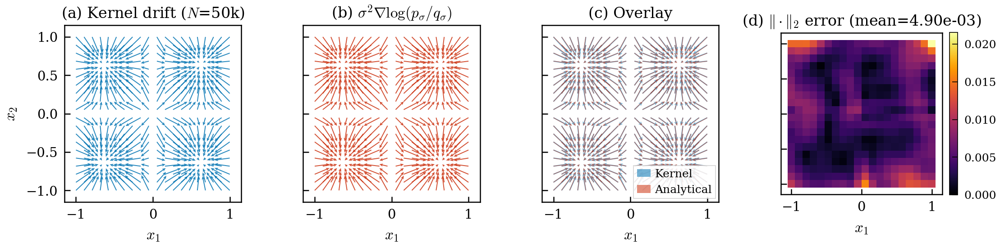
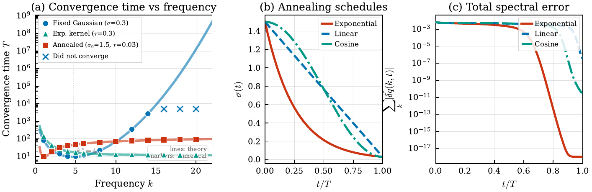
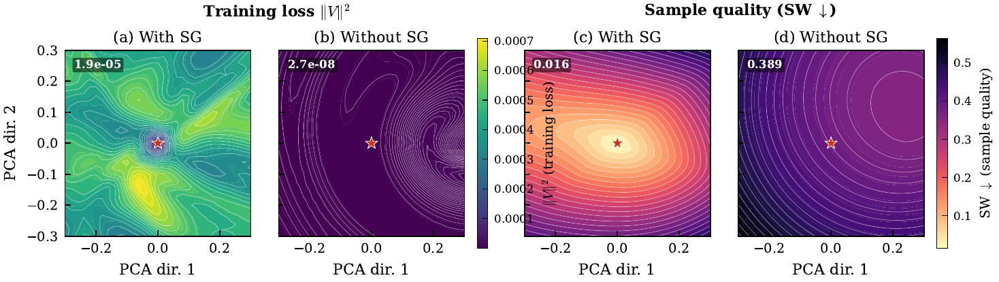
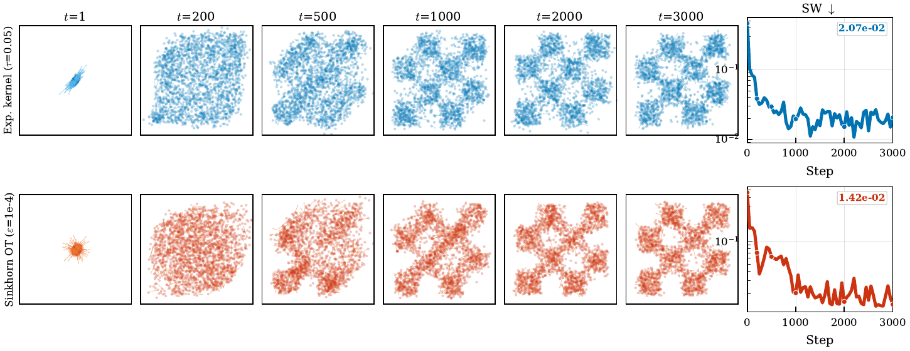
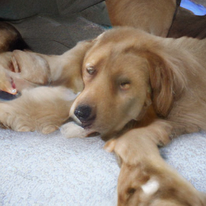
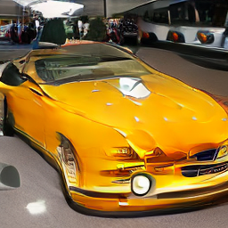

1sample current
Move the journey into training.
Keep inference to one step.
3 tiny MLPs · real MPS training · fixed probe noises
A spectral and variational perspective.
Best empirically—but selected by experiments.




same drifting loop · new geometry · SW 1.42 × 10⁻²
